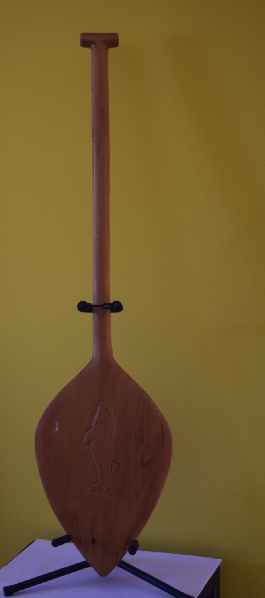
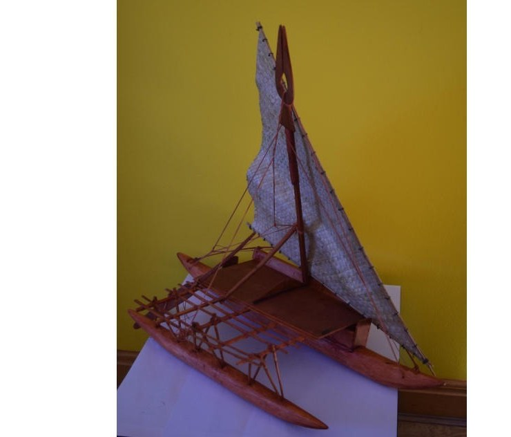
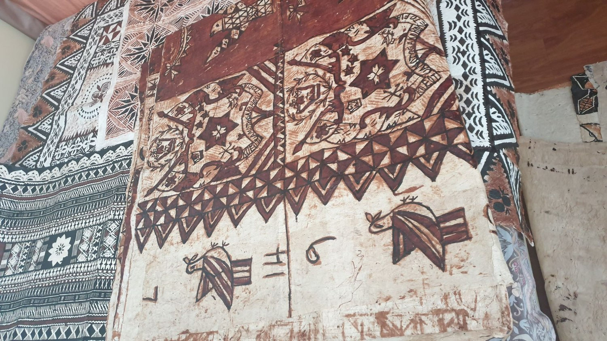
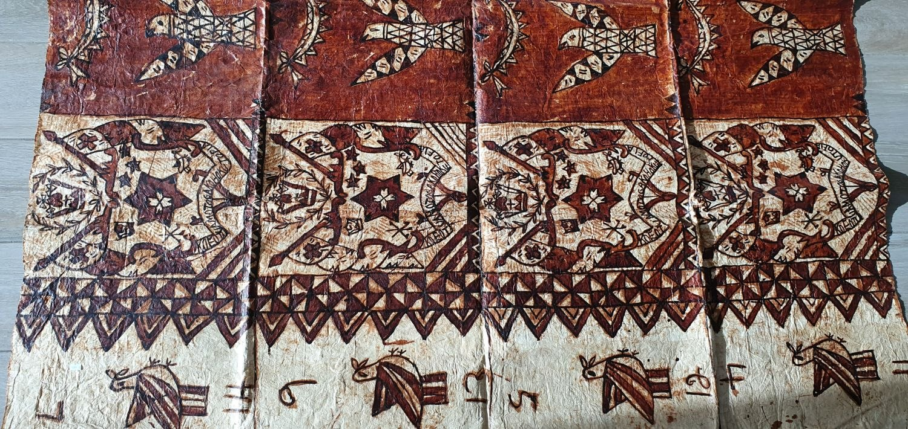
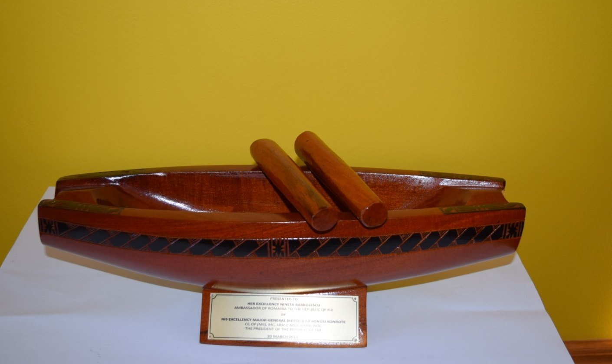

Curatorial note. The objects read here were not made for museums. They were made for use: to find fish in darkness, to carry communities across horizons, and to record in bark and pigment what no stone could hold. This essay reads them through two lenses held at once — the archaeology of Polynesian expansion (Kirch, Lewis, Finney, Irwin) and the phenomenology of the sacred in Mircea Eliade. The convergence between Romanian thought and Pacific material culture is the founding premise of PacificaRomania; where it interprets, it marks interpretation as interpretation. Presented bilingually; use the language selector above for the Romanian edition.Notă curatorială. Obiectele citite aici nu au fost făcute pentru muzee. Au fost făcute spre a fi folosite: pentru a găsi peștele în întuneric, pentru a purta comunități peste orizonturi și pentru a consemna în scoarță și pigment ceea ce nicio piatră nu putea ține. Eseul le citește prin două lentile ținute deodată — arheologia expansiunii polineziene (Kirch, Lewis, Finney, Irwin) și fenomenologia sacrului la Mircea Eliade. Convergența dintre gândirea românească și cultura materială a Pacificului este premisa fondatoare a PacificaRomania; acolo unde interpretează, marchează interpretarea ca interpretare. Prezentat bilingv; folosiți selectorul de limbă de mai sus pentru ediția în română.
In the heart of every artefact lies a compressed story — a decision, a crossing, a name given to water. The objects presented here constitute a vocabulary of Pacific civilisation that predates writing and outlasts empires. They are also objects of philosophy: instruments of reconciliation with the sea, with the dead, and with the unknown.
În inima fiecărui artefact stă o poveste comprimată — o hotărâre, o traversare, un nume dat apei. Obiectele prezentate aici alcătuiesc un vocabular al civilizației Pacificului care precede scrisul și supraviețuiește imperiilor. Sunt totodată obiecte de filozofie: instrumente de împăcare cu marea, cu morții și cu necunoscutul.
I. The Mata’u — Maui’s hook and land drawn from waterI. Mata’u — cârligul lui Maui și pământul scos din apă
The Tongan fish hook above — carved in the form of a whale’s tail, its curve sweeping with the authority of a crescent moon — is among the most philosophically charged artefacts in all of Oceania. The Mata’u is not a fishing instrument in any reduced sense. In Polynesian cosmology it is the implement with which the demigod Maui fished the islands themselves from the sea floor. Islands are not given: they are caught, hauled up, named, and inhabited.
Cârligul tongan de mai sus — cioplit în forma cozii unei balene, curba sa desfășurându-se cu autoritatea unei semilune — se numără printre cele mai încărcate filozofic artefacte din întreaga Oceanie. Mata’u nu este un instrument de pescuit în vreun sens redus. În cosmologia polineziană, este unealta cu care semizeul Maui a pescuit înseși insulele de pe fundul mării. Insulele nu sunt date: sunt prinse, trase la suprafață, numite și locuite.
Patrick Vinton Kirch, in On the Road of the Winds (2000), traces the archaeological distribution of fish hooks — bone, shell and wood — across the Lapita diaspora, showing how hook typology maps migration routes as reliably as pottery styles. The whale-tail form encodes theology: the whale is the ocean’s elder, and to cast a hook shaped as its tail is to ask the sea itself for permission, to align human hunger with cosmic order. Eliade’s axis mundi — the vertical pole joining earth, sea and sky — finds a horizontal equivalent here: a line cast downward into the dark, connecting the living to the ancestors in deep water. The hook is a tool not for catching fish but for catching worlds.
Patrick Vinton Kirch, în On the Road of the Winds (2000), urmărește distribuția arheologică a cârligelor de pescuit — din os, scoică și lemn — de-a lungul diasporei Lapita, arătând cum tipologia cârligului cartografiază rutele migrației la fel de fidel ca stilurile ceramice. Forma de coadă de balenă întrupează o teologie: balena este bătrânul oceanului, iar a arunca un cârlig în forma cozii ei înseamnă a cere însăși mării îngăduință, a potrivi foamea omenească cu ordinea cosmică. Axis mundi al lui Eliade — stâlpul vertical care unește pământul, marea și cerul — își află aici un echivalent orizontal: o undiță aruncată în jos, în întuneric, legându-i pe cei vii de strămoșii din apa adâncă. Cârligul este o unealtă nu pentru a prinde pești, ci pentru a prinde lumi.
“A sacred stone remains a stone; apparently nothing distinguishes it from all other stones. But for those to whom a stone reveals itself as sacred, its immediate reality is transmuted into a supernatural reality.” — Mircea Eliade, The Sacred and the Profane (1957).
„O piatră sacră rămâne o piatră; în aparență, nimic nu o deosebește de toate celelalte pietre. Dar, pentru aceia cărora piatra li se revelează ca sacră, realitatea ei imediată se preschimbă într-o realitate supranaturală.” — Mircea Eliade, Sacrul și profanul (1957).
II. The paddle — a chiefly tongueII. Vâsla — o limbă a căpeteniei
Restored to this essay is the object with which the whole sequence might best begin: a canoe paddle from Palau, in western Micronesia, its leaf-shaped blade swelling around an incised dolphin and its shaft rising to a T-grip. The paddle is the simplest and the most decisive of voyaging instruments. A canoe without one is inert — the hull merely floats; it is the blade that turns a person’s effort into direction. And it does more than drive: the steersman’s paddle is the only rudder of a Pacific outrigger or double-hull, held in the water at the stern to keep or change a heading read from the stars. In Palau, whose lagoon-and-reef world made the outrigger the axis of daily life, the paddle is at once tool and emblem — a finely made blade in a chief’s hand carries authority as much as propulsion.
Readus în acest eseu este obiectul cu care întreaga înșiruire ar putea începe cel mai potrivit: o vâslă de pirogă din Palau, în Micronezia de vest, cu pala în formă de frunză umflându-se în jurul unui delfin incizat și cu mânerul urcând spre un mâner în formă de T. Vâsla este cel mai simplu și cel mai hotărâtor instrument de navigație. O pirogă fără ea este inertă — coca doar plutește; pala este cea care preface efortul omului în direcție. Și face mai mult decât să propulseze: vâsla cârmaciului este singura cârmă a unei pirogi cu balansier ori cu dublă cocă din Pacific, ținută în apă la pupă spre a păstra ori schimba un curs citit din stele. În Palau, a cărei lume de lagună și recif a făcut din pirogă axul vieții zilnice, vâsla este deopotrivă unealtă și emblemă — o pală lucrată cu finețe, în mâna unei căpetenii, poartă autoritate tot atât cât propulsie.

The dolphin incised on the blade belongs to the same grammar as the whale-tail of the Mata’u: the dolphin is the navigator’s companion, a guide across the threshold between the visible sea and the invisible one beneath it. Adrienne Kaeppler’s studies of Polynesian and Micronesian material culture show how paddles moved fluidly between the practical and the liturgical — appearing in investiture, in mortuary rites, and as diplomatic gifts between island polities. To lift this paddle is to hold the verb of the whole collection: not the sea, but the crossing of it.
Delfinul incizat pe pală aparține aceleiași gramatici ca și coada de balenă a Mata’u-lui: delfinul este însoțitorul navigatorului, o călăuză peste pragul dintre marea văzută și cea nevăzută de dedesubt. Studiile Adriennei Kaeppler despre cultura materială polineziană și microneziană arată cum vâslele treceau fluid între practic și liturgic — apărând la învestituri, în ritualuri funerare și ca daruri diplomatice între cetăți insulare. A ridica această vâslă înseamnă a ține în mână verbul întregii colecții: nu marea, ci traversarea ei.
Historical interlude: the Long PauseInterludiu istoric: Marea Pauză
Between roughly 1000 BCE and 800 CE — nearly eighteen centuries — the ancestors who had swept east from the Bismarcks, colonising Vanuatu, Fiji, Tonga and Samoa with extraordinary speed, simply stopped. Archaeologists call this the Long Pause: the Lapita complex, which had compressed a thousand miles of colonisation into a few generations, fell into stillness at the Tonga–Samoa cradle. This was not failure but gestation. In those centuries the proto-Polynesian world refined its navigation, its double-hulled canoe designs, its astronomy, its mythology, its courage — before expansion resumed toward the Marquesas, Hawaiʻi, and at last Aotearoa and Rapa Nui.
Între aproximativ 1000 î.Hr. și 800 d.Hr. — aproape optsprezece secole — strămoșii care se avântaseră spre est din Bismarck, colonizând cu o viteză extraordinară Vanuatu, Fiji, Tonga și Samoa, pur și simplu s-au oprit. Arheologii o numesc Marea Pauză: complexul Lapita, care comprimase o mie de mile de colonizare în câteva generații, a intrat în neclintire la leagănul Tonga–Samoa. Nu a fost un eșec, ci o gestație. În acele secole, lumea proto-polineziană și-a rafinat navigația, planurile pirogilor cu dublă cocă, astronomia, mitologia, curajul — înainte ca expansiunea să reînceapă spre Marchize, Hawaiʻi și, în cele din urmă, Aotearoa și Rapa Nui.
Eliade, in The Myth of the Eternal Return (1949), argued that traditional peoples experience time not as linear progression but as a series of sacred returns — each departure re-enacting a founding gesture. The Long Pause was, in that sense, not an absence of movement but a deepening of it: a return to the centre before the next sacred dispersal. The artefacts held still while the people who made them became ready.
Eliade, în Mitul eternei reîntoarceri (1949), a susținut că popoarele tradiționale trăiesc timpul nu ca progresie liniară, ci ca o serie de reîntoarceri sacre — fiecare plecare rejucând un gest fondator. Marea Pauză a fost, în acest sens, nu o absență a mișcării, ci o adâncire a ei: o întoarcere la centru înaintea următoarei împrăștieri sacre. Artefactele au stat neclintite în vreme ce oamenii care le făcuseră deveneau pregătiți.
III. The Drua — the Long Pause made mobileIII. Drua — Marea Pauză pusă în mișcare
The Fijian Drua — its two hulls lashed with sennit cord, its woven pandanus sail still catching an imaginary wind — is the material product of the Long Pause. During those centuries of apparent stillness, Polynesian shipwrights solved one of the hardest engineering problems in pre-industrial history: how to carry an entire founding community — people, plants, animals, fresh water, tools, sacred objects — across two thousand miles of open ocean toward a shore no one had seen.
Piroga fijiană Drua — cele două coci ale ei legate cu funie de sennit, pânza împletită din pandanus prinzând încă un vânt imaginar — este produsul material al Marii Pauze. În acele secole de aparentă neclintire, constructorii de nave polinezieni au rezolvat una dintre cele mai grele probleme de inginerie din istoria preindustrială: cum să porți o întreagă comunitate fondatoare — oameni, plante, animale, apă dulce, unelte, obiecte sacre — peste două mii de mile de ocean deschis, spre un țărm pe care nimeni nu-l văzuse.

Ben Finney’s Voyage of Rediscovery (1994) documents the reconstruction of these vessels through the Hōkūleʻa project, showing that Polynesian double-hulled canoes were precision instruments steered by an encyclopaedic reading of stars, swells, wind shifts, bird behaviour, cloud and phosphorescence. David Lewis, in We, the Navigators (1972), recorded surviving navigators who could feel a swell change beneath them and name, from that alone, which island lay two hundred miles away. The double hull is itself a philosophical statement: stability through duality, not mass — two slender hulls, each insufficient alone, lashed together to become the fastest vessels on earth before the age of steam. There is a politics here that PacificaRomania recognises: peace as the architecture of connection between things that would founder separately.
Cartea Voyage of Rediscovery (1994) a lui Ben Finney documentează reconstrucția acestor vase prin proiectul Hōkūleʻa, arătând că pirogile polineziene cu dublă cocă erau instrumente de precizie, cârmite printr-o citire enciclopedică a stelelor, a hulei, a schimbărilor de vânt, a comportamentului păsărilor, a norilor și a fosforescenței. David Lewis, în We, the Navigators (1972), a consemnat navigatori încă în viață care puteau simți o schimbare a hulei sub ei și numi, doar din atât, ce insulă se afla la două sute de mile depărtare. Dubla cocă este ea însăși o afirmație filozofică: stabilitate prin dualitate, nu prin masă — două coci zvelte, fiecare neîndestulătoare singură, legate laolaltă spre a deveni cele mai iuți vase de pe pământ înaintea erei aburului. Există aici o politică pe care PacificaRomania o recunoaște: pacea ca arhitectură a legăturii dintre lucruri care, separate, s-ar scufunda.
The canoe is not a vehicle. It is a covenant between the living, the dead, and the island that does not yet know it is being found.
Piroga nu este un vehicul. Este un legământ între cei vii, cei morți și insula care încă nu știe că este găsită.
IV. The tapa — the ocean written on barkIV. Tapa — oceanul scris pe scoarță
The tapa cloth — beaten from the inner bark of the paper mulberry and dyed with soot and red ochre — carries two registers that together form a cosmology. An upper band bears glyph-like signs and triangular geometric forms, a visual language older than the missionaries’ alphabet; a lower band repeats frigate birds, fish and stylised palms in a rhythm that is at once calendar and map. Tapa was Pacific civilisation’s symbolic repository — its library, prayer book, deed of ownership and genealogy. To carry a rolled tapa aboard a voyaging canoe was not to carry cloth. It was to carry the world.
Pânza de tapa — bătută din scoarța interioară a dudului-de-hârtie și vopsită cu funingine și ocru roșu — poartă două registre care alcătuiesc împreună o cosmologie. O bandă superioară poartă semne asemenea unor glife și forme geometrice triunghiulare, un limbaj vizual mai vechi decât alfabetul misionarilor; o bandă inferioară repetă păsări-fregată, pești și palmieri stilizați, într-un ritm care este deopotrivă calendar și hartă. Tapa a fost depozitarul simbolic al civilizației Pacificului — biblioteca, cartea de rugăciune, actul de proprietate și genealogia ei. A purta o tapa rulată la bordul unei pirogi de voiaj nu însemna a purta o pânză. Însemna a purta lumea.

The triangular forms of this tapa — kin to the Lapita pottery motifs archaeologists use to trace the whole migration — belong to the oldest continuous graphic tradition in the settlement of Oceania. They appear on potsherds dated to 1500 BCE in the Bismarcks; they appear here, on bark, all but unchanged. Across three thousand years of crossing, the triangle held.
Formele triunghiulare ale acestei tapa — înrudite cu motivele ceramicii Lapita pe care arheologii le folosesc spre a urmări întreaga migrație — aparțin celei mai vechi tradiții grafice neîntrerupte din popularea Oceaniei. Ele apar pe cioburi de olărie datate în 1500 î.Hr. în Bismarck; apar aici, pe scoarță, aproape neschimbate. De-a lungul a trei mii de ani de traversare, triunghiul a rezistat.

“The symbol reveals a modality of the real or a structure of the world that is not evident on the level of immediate experience. In this sense the symbol is prior to language: it communicates before words are possible.” — Mircea Eliade, Images and Symbols (1952).
„Simbolul dezvăluie o modalitate a realului sau o structură a lumii care nu este evidentă la nivelul experienței imediate. În acest sens, simbolul precede limbajul: el comunică înainte ca vorbele să fie cu putință.” — Mircea Eliade, Imagini și simboluri (1952).
V. The lali — a drum, a summons, a giftV. Lali — o tobă, o chemare, un dar
The last object is the newest, and it closes the circle between the Pacific and Romania in the most literal way. It is a Fijian lali — the hollowed wooden drum, sounded with two beaters, whose voice once summoned villages to worship, to council, to mourning, and in earlier centuries to war. Its rhythms are a language: a skilled drummer could carry a coded message across valleys no shout could cross. Here the lali is carved in the form of a drua, the double-hulled canoe of the third chapter, its rim inlaid with the black-and-natural triangular frieze of Fijian masi — so that the two great Fijian objects, the drum and the voyaging canoe, become one.
Ultimul obiect este cel mai nou și închide cercul dintre Pacific și România în modul cel mai literal. Este un lali fijian — toba de lemn scobit, sunată cu două bătătoare, a cărei voce chema odinioară satele la închinare, la sfat, la jelire și, în veacurile mai vechi, la război. Ritmurile ei sunt o limbă: un toboșar iscusit putea purta un mesaj codificat peste văi pe care niciun strigăt nu le-ar fi trecut. Aici lali-ul este cioplit în forma unei drua, piroga cu dublă cocă din al treilea capitol, cu marginea încrustată cu frizul triunghiular, negru-natural, al masi-ului fijian — astfel încât cele două mari obiecte fijiene, toba și piroga de voiaj, devin unul singur.

Its provenance is exceptional. The brass plaque records that it was presented to Her Excellency Nineta Bărbulescu, Ambassador of Romania to the Republic of Fiji, by His Excellency Major-General (Ret’d) Jioji Konusi Konrote, President of the Republic of Fiji, on 20 March 2019 — the day of the presentation of her credentials. A drum whose purpose is to call a scattered community together, given head of state to envoy: it is hard to imagine an object that states the premise of PacificaRomania more exactly. This piece was not bought; it was given, as an act of welcome. The lali’s function is to gather those who are apart — which is, precisely, what this collection is for.
Proveniența sa este excepțională. Placa de alamă consemnează că a fost oferit Excelenței Sale Nineta Bărbulescu, Ambasadoarea României în Republica Fiji, de către Excelența Sa general-maior (în rezervă) Jioji Konusi Konrote, Președintele Republicii Fiji, la 20 martie 2019 — ziua prezentării scrisorilor de acreditare. O tobă al cărei rost este să adune laolaltă o comunitate risipită, dăruită de la șef de stat la trimis: e greu de închipuit un obiect care să rostească premisa PacificaRomania mai exact. Această piesă nu a fost cumpărată; a fost dăruită, ca gest de bun-venit. Funcția lali-ului este de a-i strânge pe cei despărțiți — ceea ce este, tocmai, rostul acestei colecții.
The objects the world already knows: MoanaObiectele pe care lumea le cunoaște deja: Moana
You have almost certainly seen these objects before. In 2016 Disney’s Moana placed the whole vocabulary of this essay before a global audience: Maui’s great fish hook, drawn straight from the Mata’u tradition; a double-hulled voyaging canoe crossing the open ocean; the tapa-and-tattoo geometry that animates skin and sail; and, above all, the wayfinding that Lewis and Finney had recorded from the last living navigators, sung in the film as “We Know the Way.” It is why a child in Bucharest or Sydney now recognises a fish hook as a demigod’s tool, and a double hull as the vessel of a people who read the stars. The artefacts in this collection are not illustrations of the film; the film is a late echo of them.
Aproape sigur ați mai văzut aceste obiecte. În 2016, Vaiana (Moana) de la Disney a așezat întregul vocabular al acestui eseu în fața unui public global: marele cârlig al lui Maui, luat direct din tradiția Mata’u; o pirogă cu dublă cocă traversând oceanul deschis; geometria de tapa și tatuaj care însuflețește pielea și pânza; și, mai presus de toate, arta găsirii drumului pe care Lewis și Finney o consemnaseră de la ultimii navigatori încă în viață, cântată în film drept „We Know the Way”. De aceea un copil din București sau din Sydney recunoaște azi un cârlig drept unealta unui semizeu, iar o dublă cocă drept nava unui popor care citește stelele. Artefactele din această colecție nu sunt ilustrații ale filmului; filmul este un ecou târziu al lor.
That reach is also a responsibility. Scholars of the Pacific have both welcomed the film’s revival of voyaging pride and questioned its compression of many distinct cultures into a single bright composite (Tamaira & Fonoti 2018; Miyose 2019). PacificaRomania takes Moana as an invitation rather than an authority: the film sends millions in search of the real objects, and this collection tries to hold a few of them — and to say plainly whose they are and what they were for. The collection’s own note on this connection is on Facebook.
Această întindere este și o responsabilitate. Cercetătorii Pacificului au întâmpinat deopotrivă cu bucurie renașterea mândriei navigației prin film și au pus la îndoială comprimarea multor culturi distincte într-un singur amestec strălucitor (Tamaira & Fonoti 2018; Miyose 2019). PacificaRomania ia Moana drept o invitație, nu o autoritate: filmul trimite milioane de oameni în căutarea obiectelor reale, iar această colecție încearcă să țină câteva dintre ele — și să spună limpede ale cui sunt și la ce au slujit. Nota colecției despre această legătură se află pe Facebook.
Why these objects matter hereDe ce contează aici aceste obiecte
The connection between the Pacific and Romania is not geographical but philosophical. Both the Polynesian navigators of the Long Pause and the communities PacificaRomania speaks to have known what it means to hold still before crossing, to endure a long pause before a great leap, to encode survival in objects rather than in conquest. The fish hook, the double-hulled canoe, the tapa cloth are objects of reconciliation — instruments of peace not in the sense of submission but of a community that has decided, together, that the crossing is worth making.
Legătura dintre Pacific și România nu este geografică, ci filozofică. Deopotrivă navigatorii polinezieni ai Marii Pauze și comunitățile către care vorbește PacificaRomania au știut ce înseamnă a sta neclintit înaintea traversării, a îndura o lungă pauză înaintea unui mare salt, a codifica supraviețuirea în obiecte, nu în cucerire. Cârligul, piroga cu dublă cocă, pânza de tapa sunt obiecte ale împăcării — instrumente ale păcii nu în sensul supunerii, ci al unei comunități care a hotărât, împreună, că traversarea merită făcută.
Eliade wrote that sacred objects reveal a reality that no longer belongs to this world. These Pacific artefacts reveal something like the opposite: a reality belonging entirely to this world — of wind and current and star-path, where the correct reading of a swell beneath a hull is the difference between arrival and disappearance. The sacred, here, is nothing other than the fully mastered real. That is the peace PacificaRomania seeks: not transcendence, but mastery of the crossing.
Eliade scria că obiectele sacre dezvăluie o realitate care nu mai aparține acestei lumi. Aceste artefacte din Pacific dezvăluie ceva aproape opus: o realitate care aparține întru totul acestei lumi — a vântului, a curentului și a drumului-de-stele, unde citirea corectă a hulei de sub o cocă este diferența dintre sosire și dispariție. Sacrul, aici, nu este altceva decât realul pe deplin stăpânit. Aceasta este pacea pe care o caută PacificaRomania: nu transcendența, ci stăpânirea traversării.
Notes & sourcesNote și surse
- Eliade. M. Eliade, The Sacred and the Profane (Harcourt, 1957); The Myth of the Eternal Return (Princeton UP, 1949); Images and Symbols (Sheed & Ward, 1952). The pairings offered here are interpretive.Eliade. M. Eliade, Sacrul și profanul (Harcourt, 1957); Mitul eternei reîntoarceri (Princeton UP, 1949); Imagini și simboluri (Sheed & Ward, 1952). Asocierile propuse aici sunt interpretative.
- Pacific archaeology & the Long Pause. Patrick V. Kirch, On the Road of the Winds (UC Press, 2000) and The Evolution of the Polynesian Chiefdoms (Cambridge UP, 1984); Geoffrey Irwin, The Prehistoric Exploration and Colonisation of the Pacific (Cambridge UP, 1992).Arheologia Pacificului și Marea Pauză. Patrick V. Kirch, On the Road of the Winds (UC Press, 2000) și The Evolution of the Polynesian Chiefdoms (Cambridge UP, 1984); Geoffrey Irwin, The Prehistoric Exploration and Colonisation of the Pacific (Cambridge UP, 1992).
- Navigation. David Lewis, We, the Navigators (U of Hawaiʻi Press, 1972); Ben Finney, Voyage of Rediscovery (UC Press, 1994).Navigație. David Lewis, We, the Navigators (U of Hawaiʻi Press, 1972); Ben Finney, Voyage of Rediscovery (UC Press, 1994).
- Material culture. Adrienne Kaeppler, The Pacific Arts of Polynesia and Micronesia (Oxford UP, 2008).Cultură materială. Adrienne Kaeppler, The Pacific Arts of Polynesia and Micronesia (Oxford UP, 2008).
- Moana and the Pacific. ‘Ilaisaane M. G. Tamaira & Dionne Fonoti, “Beyond Paradise? Retelling Pacific Stories in Disney’s Moana,” The Contemporary Pacific 30(2), 2018; Colby Y. Miyose, “‘We Know the Way’: Culture–Nature Relationship and Kuleana in Disney’s Moana,” Popular Culture Review, 2019. The collection’s note on the film’s objects: Facebook post.Moana și Pacificul. ‘Ilaisaane M. G. Tamaira și Dionne Fonoti, „Beyond Paradise? Retelling Pacific Stories in Disney’s Moana”, The Contemporary Pacific 30(2), 2018; Colby Y. Miyose, „‘We Know the Way’: Culture–Nature Relationship and Kuleana in Disney’s Moana”, Popular Culture Review, 2019. Nota colecției despre obiectele filmului: postare Facebook.
- The paddle. A canoe paddle from Palau (western Micronesia); on the paddle as propulsion, sole steering-rudder and chiefly emblem, and its ceremonial life, see Kaeppler (above). Regional attribution follows the collection’s record.Vâsla. O vâslă de pirogă din Palau (Micronezia de vest); despre vâslă ca propulsie, unică cârmă și emblemă a căpeteniei, și despre viața ei ceremonială, vezi Kaeppler (mai sus). Atribuirea regională urmează consemnarea colecției.
- A state gift. The Fijian lali was presented to Nineta Bărbulescu, Ambassador of Romania to the Republic of Fiji, by President Jioji Konusi Konrote on 20 March 2019 (per the brass plaque), at the presentation of credentials.Un dar de stat. Lali-ul fijian a fost oferit Ninetei Bărbulescu, Ambasadoarea României în Republica Fiji, de către Președintele Jioji Konusi Konrote la 20 martie 2019 (conform plăcii de alamă), la prezentarea scrisorilor de acreditare.
- Provenance. Held in the PacificaRomania collection; the Australian works were first exhibited at the Embassy of Romania in Canberra (2019–2020).Proveniență. Se află în colecția PacificaRomania; lucrările australiene au fost expuse pentru prima dată la Ambasada României la Canberra (2019–2020).